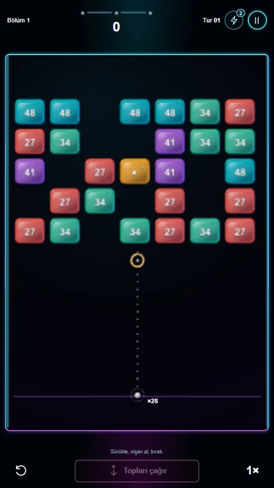
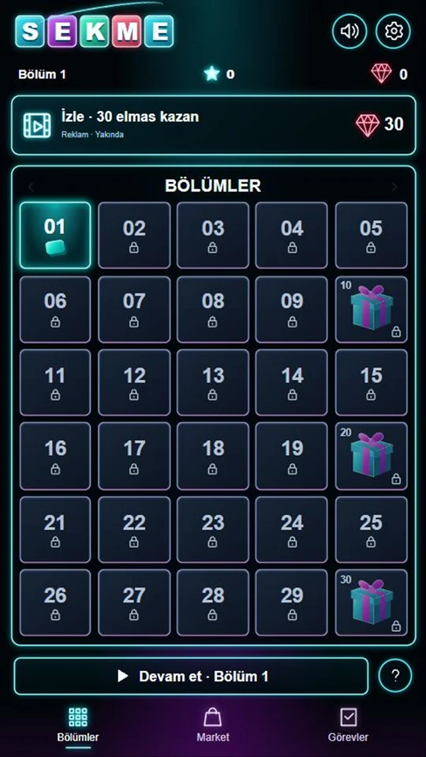

Kutunun sayısı sana ne söyler?
Her kutudaki sayı kalan vuruş ihtiyacını gösterir. Yalnız kutunun rengine bakmak yerine sayıyı ve alt çizgiye yakınlığını birlikte değerlendir. Yakındaki düşük sayılı bir kutuyu temizlemek, uzaktaki yüksek sayılı kutuya tek vuruş yapmaktan daha acil olabilir.
- Sürükle ve nişan al. Atış yönünü belirlerken ilk temas edeceğin kutuyu seç.
- Sekme yolunu düşün. Duvarı kullanarak yan yüzeylere ulaşmayı dene. Tek bir kutuya düz atmakla kutular arasında tekrar eden temaslar aramak aynı plan değildir.
- Bırak ve sonucu izle. Bir sonraki atışı planlamadan önce hangi kutuların kaldığını kontrol et. Önceki atışın açısını sadece alışkanlıkla tekrarlama.
Gerçek ekran üzerinden bir örnek
Aşağıdaki test ekranında ilk bölümün ilk turu görülüyor. En alttaki kutularda 27 ve 34 gibi farklı sayılar var; atış noktasında ×28 yazıyor. 28 top olması, her topun aynı kutuya değeceği veya o sıranın kesin temizleneceği anlamına gelmez. Önce temas yolunu, ardından geri sekmelerin nereye ulaşabileceğini düşün. Bu ekran bir örnektir; yeni bir oyunda aynı düzenin çıkacağını garanti etmez.


Atışlar ve kişiselleştirme
Mevcut test sürümünde küçük, standart ve büyük top seçenekleri; delici, patlayan, donduran ve ek top sağlayan sınırlı özel atışlar bulunur. Top görünümü ve neon iz efekti, seçilebilir görsel seçeneklerdir. Kozmetik görünümü bir özel atışla karıştırma: farklı görünmek tek başına daha çok hasar verildiği anlamına gelmez.
Bir özel atışı denemeden önce açıklamasını oku. Aynı turda hem top boyutunu hem atış türünü değiştirmek, sonuçtaki farkın nedenini anlamayı güçleştirir. Önce normal atışın yolunu tanı, sonra tek bir değişkenle karşılaştır.
Bölüm yolculuğu ve ayarlar
0.6.1 test kaydı 1000 bölüm kapsamı, günlük görevler, kalıcı başarılar ve her onuncu bölümde hediye kutusu içeriyor. Bölüm numarası ile görev ilerlemesini ayrı takip et; görev ödülü almak, bütün bölümlerin tamamlandığı anlamına gelmez.
Türkçe ve İngilizce arayüz seçenekleri var. Türkçe cihaz dilinde Türkçe, diğer cihaz dillerinde İngilizce açılır; Ayarlar'dan tercih değiştirilebilir. Ses, titreşim ve hareket efektleri ayrı ayarlanır. Ekranı takip etmekte zorlanıyorsan hareket efektlerini azaltarak dene.


Test sürümünün sınırları
0.6.0–0.6.1 kayıtlarında gerçek para satın alımları, ödüllü reklamlar ve sunucu cüzdanı kapalıdır. Temel bölüm ilerleyişi satın alma gerektirmez; kozmetikler ve özel atışlar oyun içinde kazanılan elmaslarla denenebilir. Gelecek sürümlerin fiyatları veya reklam davranışı için burada bir vaat vermiyoruz.
İç testte bulunmak, uygulamanın genel yayında olduğu anlamına gelmez. Bu sayfanın hazırlanması sırasında fiziksel telefonda yeni bir performans ya da pil testi yapılmadı. Bir hata bildirirken sürümü, bölüm numarasını, cihaz modelini ve hatanın hangi adımdan sonra oluştuğunu belirt; hesap şifresi gönderme.